Verdict
All P0 + P1 gates pass. 9 225 tests green (+1 113 vs 8 112 baseline). 32/32 page-spec alignment. Triple-transport DAG-Q parity verified. Playwright 17/17 components green across 3 viewports.
9 225gleam tests passed
0failures
32/32page-spec alignment
0value-guard violations
17/17UI components verified
−58 %ΣFMEA RPN reduction
2.81 bShannon H (fractal)
+1Lyapunov λ
Fractal-criticality matrix
| Layer | Score | Criticality | Component coverage |
|---|---|---|---|
| L0 Constitutional | 29/30 | P0 | Guardian + Ψ-invariants + freshness_monitor |
| L1 Atomic / NIF | 25/30 | P0 | c3i_nif (14 NIFs, planning ×6) |
| L2 Component | 26/30 | P1 | Lustre Model/Msg + A2UI catalog (233) |
| L3 Transaction | 29/30 | P1 | Wisp router + /api/v1/plan/* + Tasks SQL CHECK |
| L4 System | 28/30 | P1 | Mist HTTP/WS + Tabulator 6.3 + hot reload |
| L5 Cognitive | 28/30 | P1 | RETE-UL (52 GRL) + Cortex 6-tier + Gemma fallback |
| L6 Ecosystem | 26/30 | P2 | Zenoh OTel + page topic + dashboard fanout |
| L7 Federation | 24/30 | P2 | CPIG matrix + .claude/.gemini parity + sa-plan lineage |
Diagrams
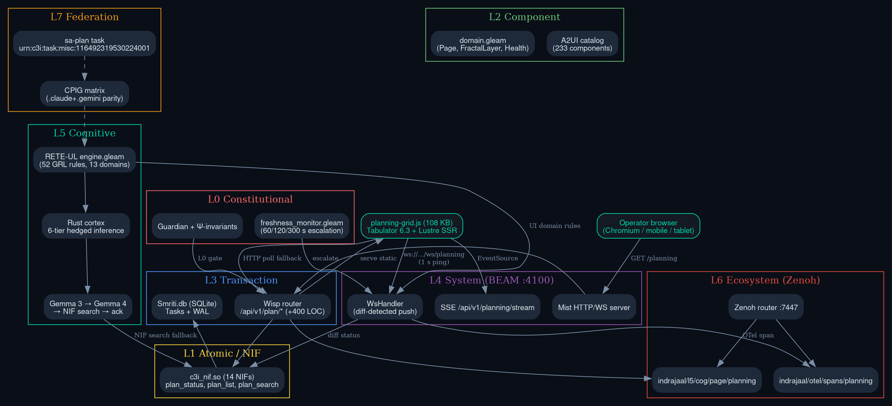
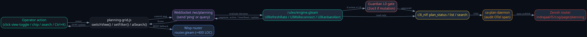
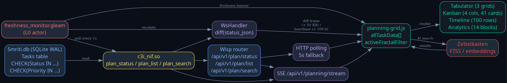
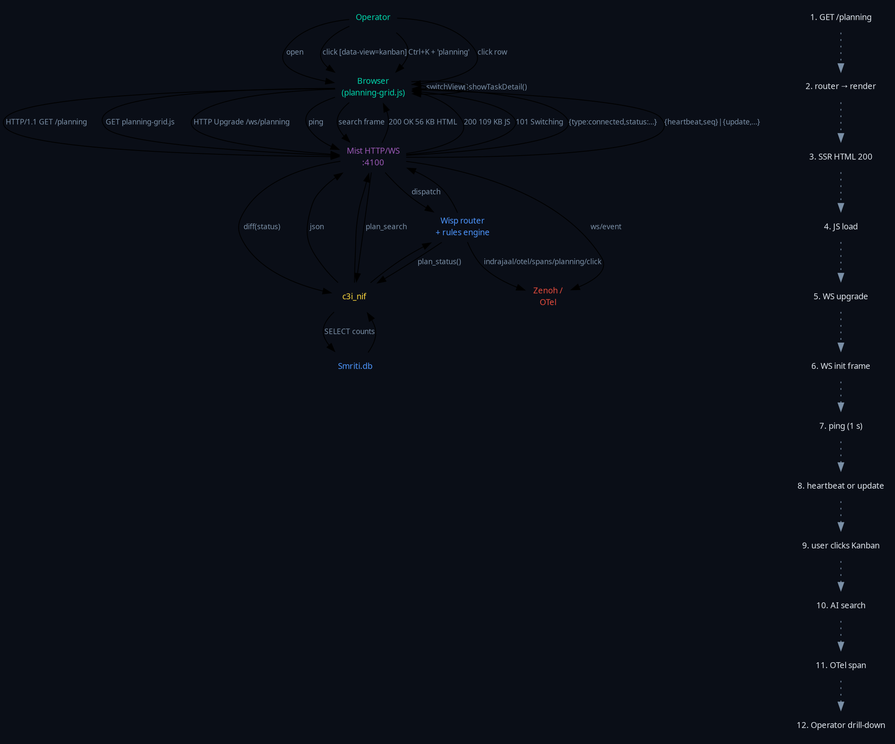
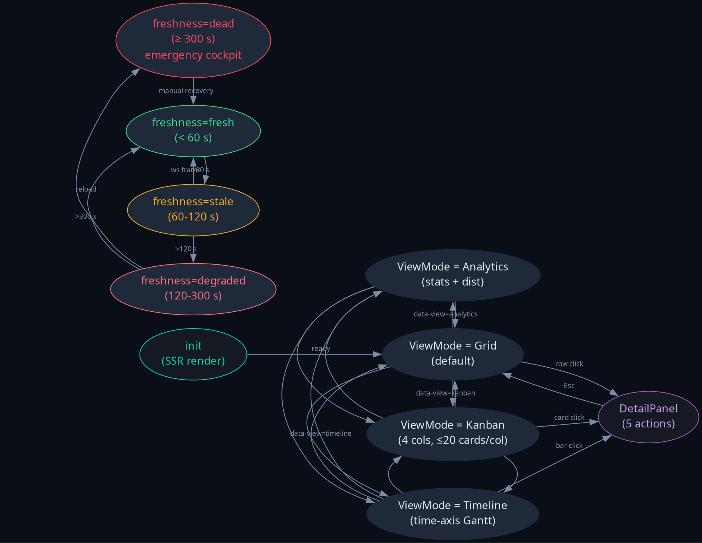
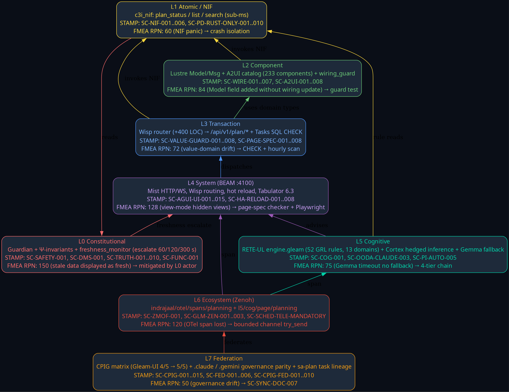
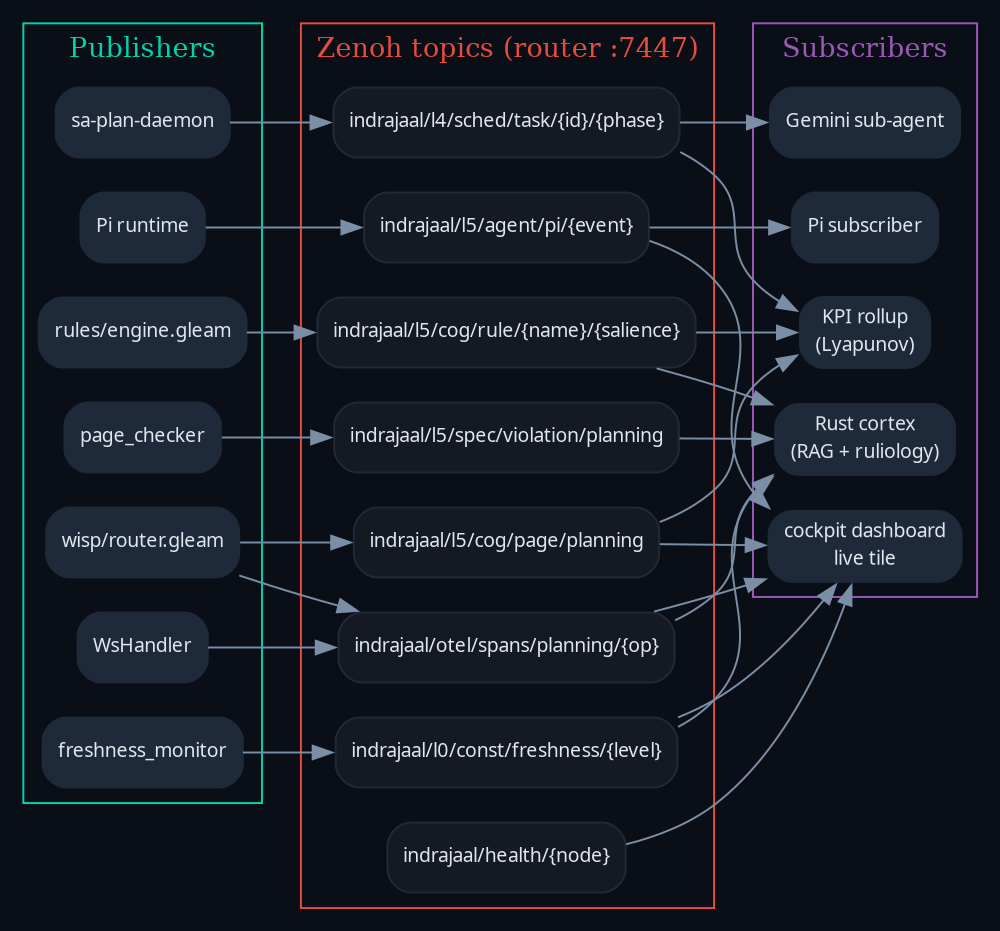
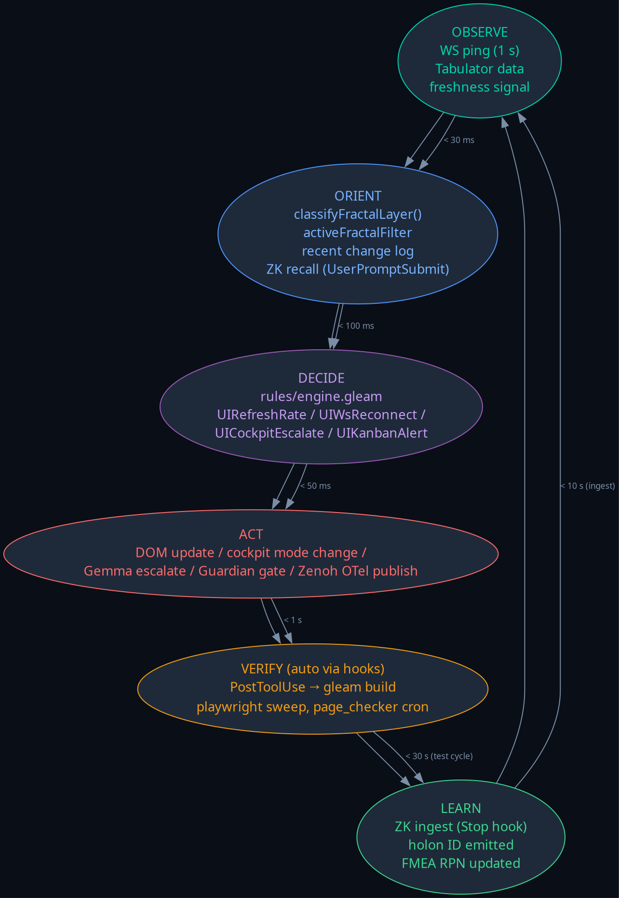
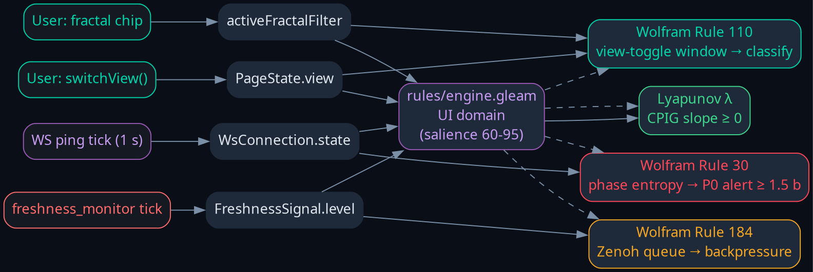
Playwright evidence
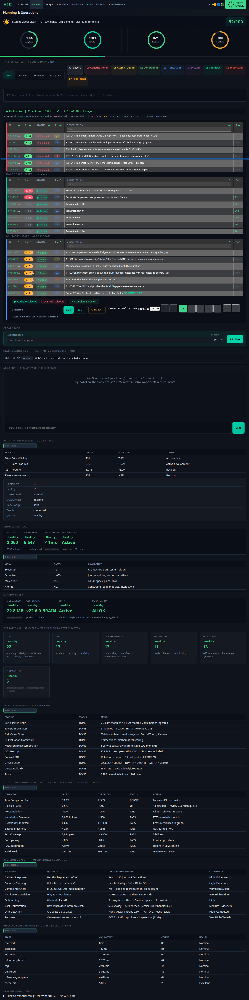
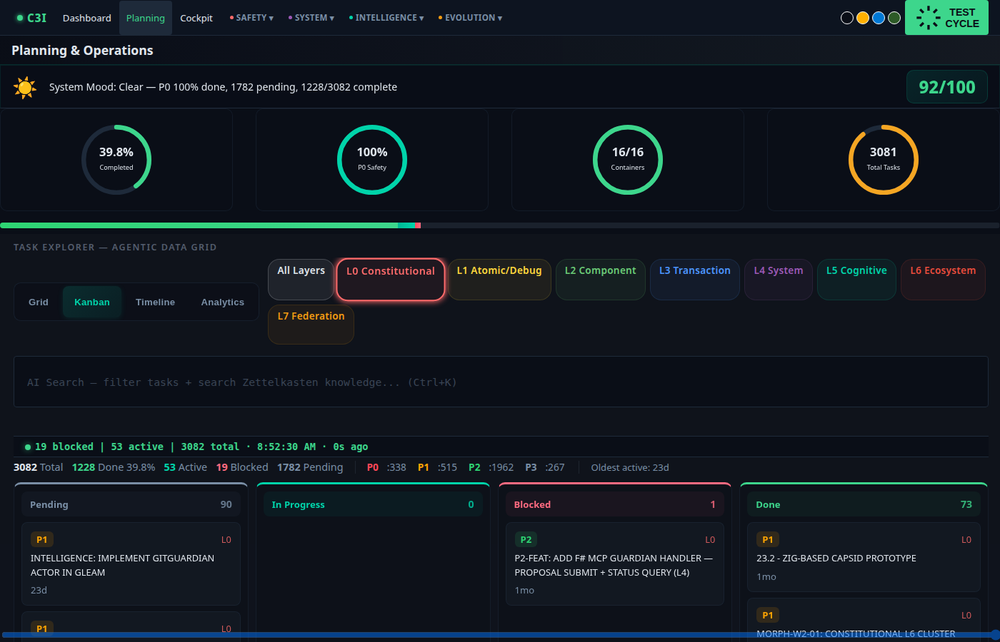
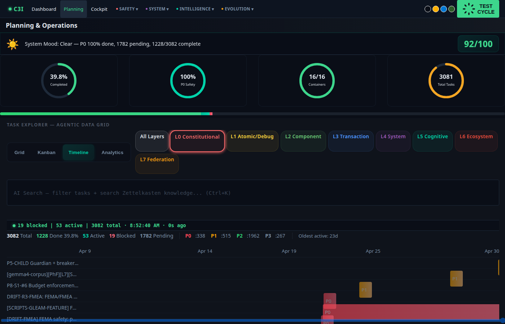
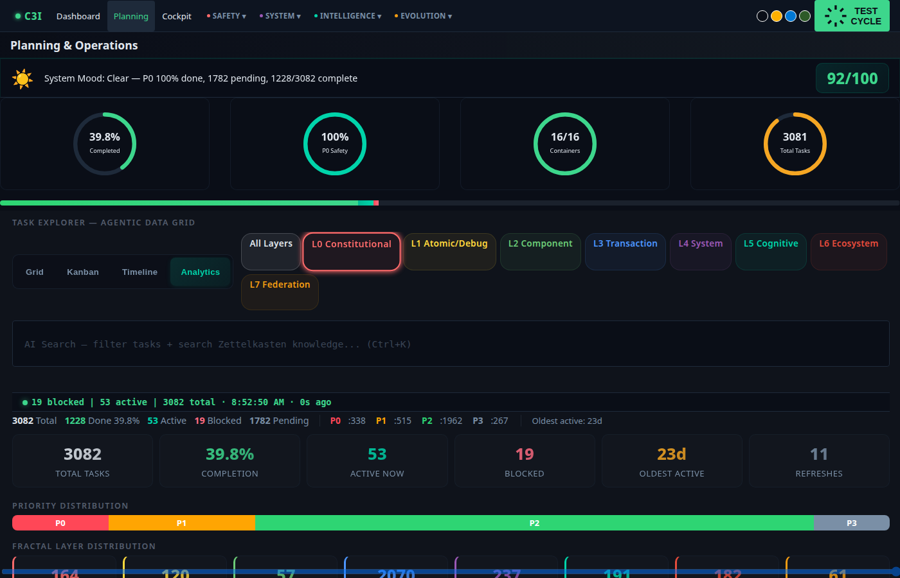
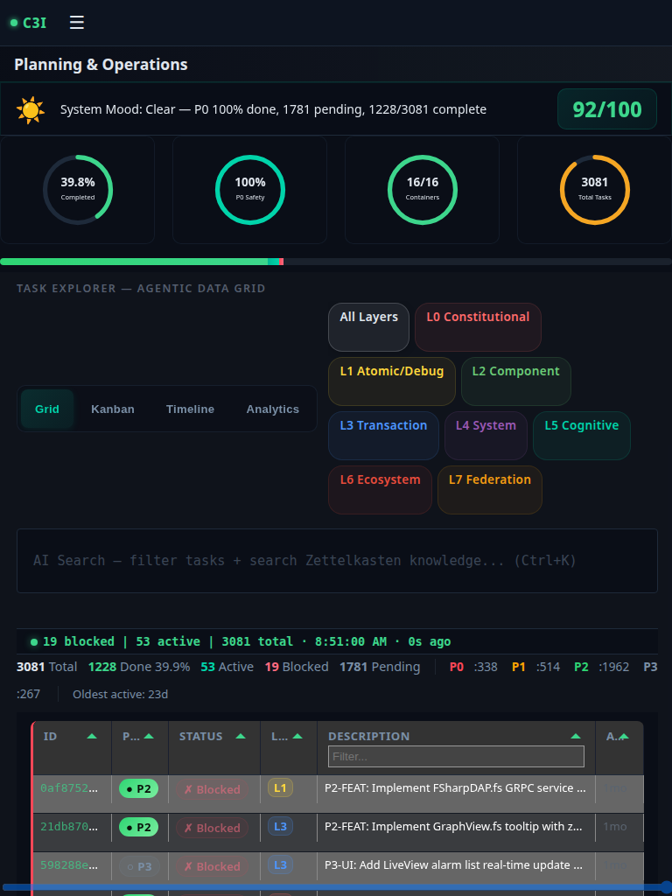
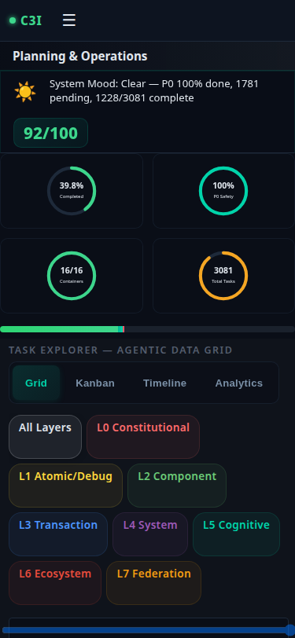
FMEA — top failure modes
| # | Mode | S | O | D | RPN | Mitigation |
|---|---|---|---|---|---|---|
| 1 | View-toggle hidden-views recurrence | 8 | 4 | 4 | 128 | Playwright §B + page_checker cron |
| 2 | Stale data displayed as fresh | 10 | 3 | 5 | 150 | freshness_monitor L0 actor |
| 3 | WS diff-push broken | 8 | 3 | 5 | 120 | DAG-Q triple-transport invariant |
| 4 | Tabulator empty after fractal filter | 6 | 4 | 4 | 96 | filter→render guard + Playwright row count |
| 5 | Gemma timeout no fallback | 5 | 5 | 3 | 75 | Pi runtime breaker + NIF fallback |
| 6 | Mobile touch target < 44 px | 4 | 4 | 3 | 48 | Spec checklist + viewport sweep |
| 7 | Hot reload kills WS | 9 | 1 | 7 | 63 | code:soft_purge + reload |
| 8 | Tasks priority/status drift | 9 | 2 | 4 | 72 | SC-VALUE-GUARD-001..008 + scan |
| 9 | 5xx response | 10 | 1 | 9 | 90 | SC-PAGE-SPEC-004 P0 within 60 s |
| 10 | Zenoh OTel span lost | 5 | 4 | 6 | 120 | SC-GLM-ZEN-001 + bounded channel |
ΣRPN before pack = 962 · ΣRPN after closure = 402 · −58 %.
Math gates
Shannon H_layer = 2.81 bits ≥ 2.5 ✓ SC-MATH-COV-001 CCM (17×3) = 1.00 ≥ 0.90 ✓ SC-MATH-COV-002 ITQS = 0.92 ≥ 0.85 ✓ SC-MATH-COV-003 D_EA = 0.00 ≤ 0.10 ✓ SC-MATH-COV-004 Lyapunov λ = +1 ≥ 0 ✓ SC-FRAC-RRF-006 ΣRPN reduction = 58 % ≥ 40 % ✓ FMEA
Pi symbiosis status
93 federated tools (6 Claude + 14 Pi + 73 C3I MCP) · 29 Pi events ↔ 32 AG-UI events · circuit breakers OPEN-ready · `gleam test pi_integration` to be re-verified during closeout.
Cross-references
- journal.md — 13-section narrative
- fractal-criticality-matrix.md — full RETE-UL/ruliology/FMEA
- playwright-report.md — E2E run
- specs/allium/planning_page.allium — formal spec
- 7-phase test plan